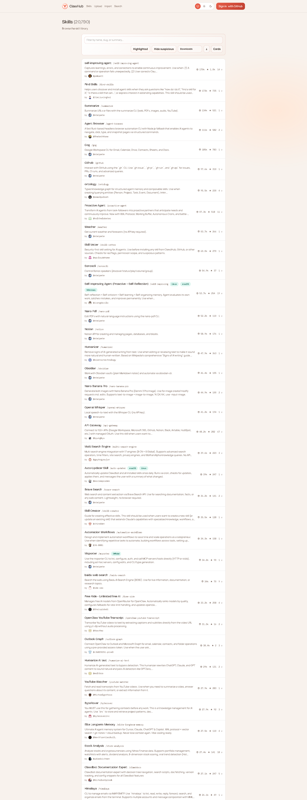

⭐ 最受欢迎的 Skills (Top 20)
ClawHub 官方推荐的热门 Skills，基于实时截图更新
以下是 clawhub.ai/skills 上的热门 Skills，按官方排序展示前 20 名：
📝 self-improving-agent
捕获学习经验、错误和修正，实现持续改进
核心功能：
- 自动记录命令失败、用户纠正、API 错误等
- 记录到 .learnings/ERRORS.md、LEARNINGS.md、FEATURE_REQUESTS.md
- 支持将重要学习升级到 CLAUDE.md、AGENTS.md、SOUL.md
- 提供错误检测、学习提取、自动改进的完整工作流
使用场景：当命令失败、用户纠正你、发现知识过时、找到更好方法时自动记录
npx clawhub install self-improving-agent
🎯 First Skill
帮助用户发现和入门 skills
核心功能：
- 当用户问"How do I..."时提供引导
- 帮助发现适合的 skills
- 提供入门指导和示例
使用场景：新用户入门、发现 skills、学习如何使用
npx clawhub install first-skill
📄 Summarize
从 URL、播客和本地文件中总结或提取内容
核心功能：
- 总结网页内容
- 提取播客/视频转录
- 处理本地文件
- 支持多种格式（PDF、文本、网页等）
使用场景：快速了解长文内容、提取关键信息、生成摘要
npx clawhub install summarize
🌐 Agent Browser
AI 代理的浏览器自动化 CLI
核心功能：
- 网页导航和截图
- 表单填写和按钮点击
- 数据提取和网页抓取
- 支持登录、Cookie、Session 管理
- 可视化浏览器调试
使用场景：网页截图、自动化测试、数据抓取、表单提交
npx clawhub install agent-browser
📧 GWS (Google Workspace)
Google Workspace CLI 集成
核心功能：
- Gmail 邮件管理
- Calendar 日历操作
- Drive 文件管理
- Sheets 表格操作
- Docs 文档编辑
使用场景：邮件自动化、日程管理、文档处理、表格数据分析
npx clawhub install gws
🐙 GitHub
使用 gh CLI 与 GitHub 交互
核心功能：
- 仓库管理（创建、克隆、推送）
- Issue 和 PR 管理
- GitHub Actions 工作流
- 代码审查和合并
使用场景：代码托管、协作开发、CI/CD、项目管理
npx clawhub install github
🧠 ontology
结构化代理记忆和可组合技能的类型知识图谱
核心功能：
- 构建知识图谱
- 类型化的代理记忆
- 可组合的技能系统
使用场景：复杂知识管理、技能组合、记忆结构化
npx clawhub install ontology
🚀 Proactive Agent
将 AI 代理从被动响应者转变为主动合作伙伴
核心功能：
- 预测用户需求
- 主动采取行动
- 持续监控和提醒
使用场景：主动助手、智能提醒、预测性工作流
npx clawhub install proactive-agent
🌤️ Weather
获取当前天气和预报，无需 API Key
核心功能：
- 当前天气查询
- 天气预报
- 支持全球任意地点
- 无需 API Key
使用场景：出行规划、天气提醒、日常生活
npx clawhub install weather
🔍 Skill Vector
技能的向量内存系统
核心功能：
- 语义搜索
- 少样本匹配
- 权限检查
- 子技能模式
使用场景：技能发现、智能匹配、权限管理
npx clawhub install skill-vector
🎨 Sonauto
AI 音乐生成
核心功能：
- 根据文本生成音乐
- 支持多种风格
- 自定义参数
使用场景：音乐创作、背景音乐、创意项目
npx clawhub install sonauto
📝 Self-improving Agent (Proactive + Self-Reflective)
主动式 + 自我反思的改进代理
核心功能：
- 主动发现问题
- 自我反思和改进
- 持续学习优化
使用场景：高级自动化、持续优化、智能迭代
npx clawhub install self-improving-agent-proactive
📄 Nano PDF
PDF 自然语言处理
核心功能：
- PDF 内容提取
- 自然语言查询
- 文档分析
使用场景：PDF 处理、文档分析、信息提取
npx clawhub install nano-pdf
🗄️ Notion
Notion 工作空间集成
核心功能：
- 页面管理
- 数据库操作
- 内容同步
使用场景：知识管理、项目管理、文档协作
npx clawhub install notion
🎙️ Humanizer
文本人性化处理
核心功能：
- AI 文本人性化
- 风格转换
- 自然语言优化
使用场景：内容创作、文本优化、风格调整
npx clawhub install humanizer
📝 Obsidian
Obsidian 笔记集成
核心功能：
- 笔记管理
- Markdown 处理
- 知识图谱
使用场景：个人知识管理、笔记整理、知识库构建
npx clawhub install obsidian
🎨 Nano Banana Pro
AI 图像生成
核心功能：
- 文本生成图像
- 图像编辑
- 风格转换
使用场景：图像创作、设计辅助、创意项目
npx clawhub install nano-banana-pro
🎵 OpenAI Whisper
语音转文本
核心功能：
- 音频转录
- 多语言支持
- 高精度识别
使用场景：会议记录、播客转录、语音笔记
npx clawhub install openai-whisper
🌐 API Gateway
API 网关管理
核心功能：
- API 路由管理
- 请求转发
- 认证和限流
使用场景：API 管理、微服务、网关配置
npx clawhub install api-gateway
🔍 Multi Search Engine
多搜索引擎集成
核心功能：
- 多引擎搜索
- 结果聚合
- 智能排序
使用场景：综合搜索、信息收集、研究分析
npx clawhub install multi-search-engine
📌 如何安装 Skills
使用 ClawHub CLI 安装：
# 搜索 skills
npx clawhub search <关键词>
# 安装 skill
npx clawhub install <skill-name>💡 提示
访问 clawhub.ai/skills 发现更多实用 skills，目前共有 2770+ 个 skills 可供选择。
📸 实时截图
本页面内容基于实时截图更新（2025-03-12）：
